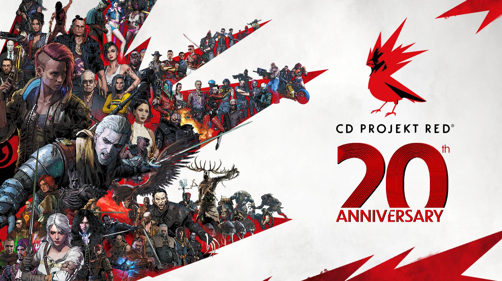
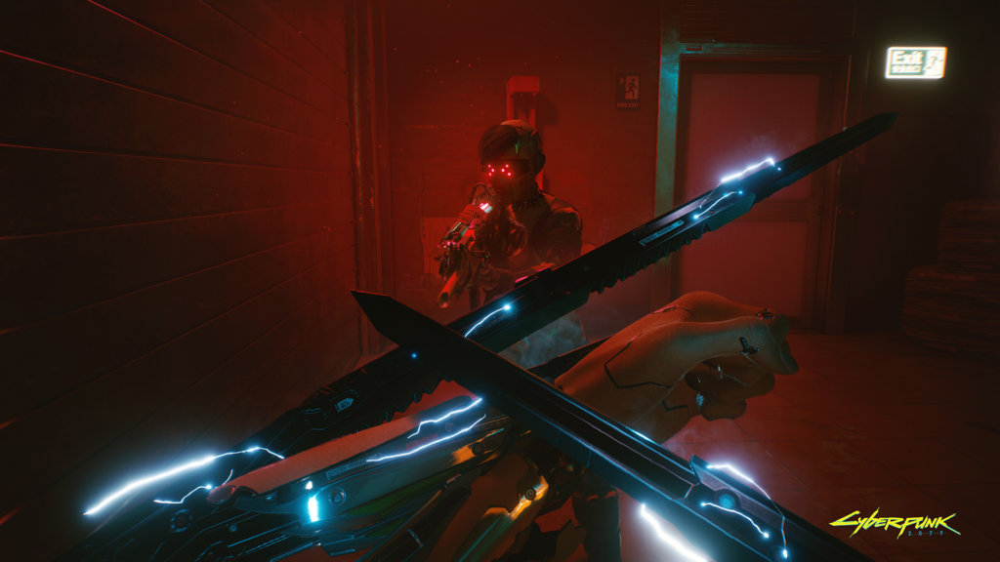
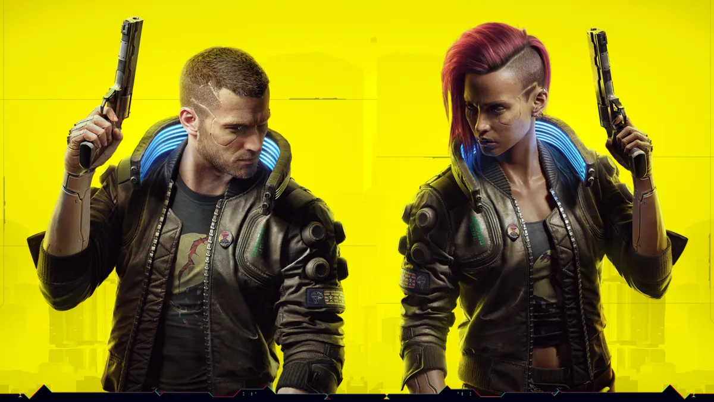
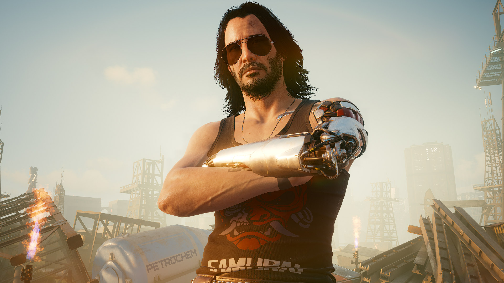
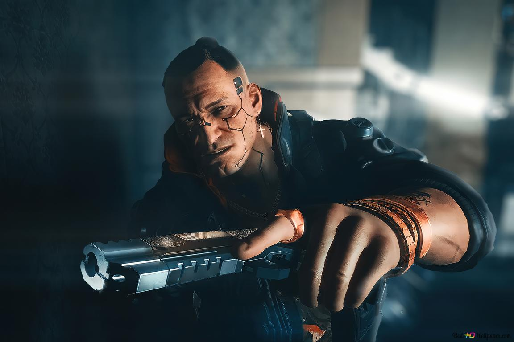
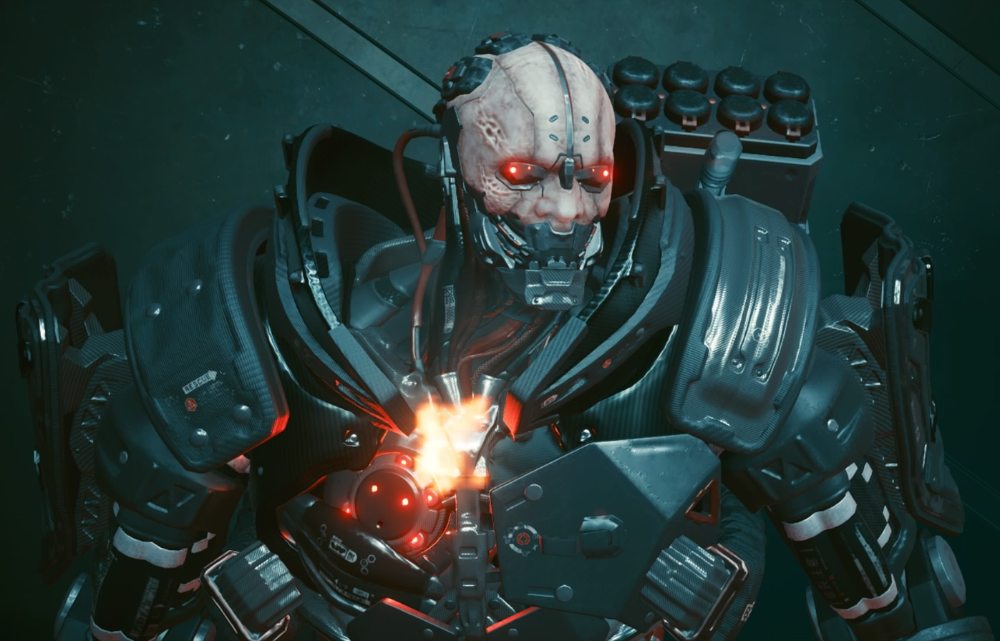

El videojuego fue desarrollado por CD Projekt RED, un estudio interno dentro de CD Projekt, usando el motor de videojuegos REDengine 4. Lanzaron una nueva división en Breslavia y se asociaron con Digital Scapes, Nvidia, QLOC y Jali Research para ayudar al desarrollo. El personal excede el número de los que trabajaron en The Witcher 3: Wild Hunt. Durante el evento E3 de 2019, se declaró la fecha oficial del lanzamiento del videojuego, y además se reveló que el actor Keanu Reeves formaría parte del elenco de personajes que tendrían relevancia en el transcurso del videojuego. Estos datos fueron presentados por el mismo actor en la presentación del videojuego en el evento E3, siendo el conductor del evento del videojuego.
La historia sigue la lucha de V, un/una mercenario/a de Night City que lidia con las consecuencias de un atraco que salió mal y que resulta en un biochip experimental cibernético que contiene un engrama de la legendaria estrella de rock y terrorista Johnny Silverhand, que amenaza con sobrescribir lentamente la mente de V. A medida que avanza la historia, V y Silverhand deben trabajar juntos para encontrar una manera de separarse y salvar la vida de V.
Cyberpunk 2077 es un videojuego de rol en primera persona. Cada aspecto del jugador como V (voz, rostro, peinados, tipo de cuerpo y modificaciones, antecedentes y vestimenta) es personalizable.Las categorías de estadísticas (cuerpo, inteligencia, reflejos, técnica y genial) están influenciadas por las clases de personajes que asumen los jugadores, que son netrunner (hackeo), techie (maquinaria) y solo (combate). V debe consultar a un "ripperdoc" para actualizar y comprar implantes de software cibernético; los mercados negros ofrecen habilidades de grado militar y la rareza de cualquier equipo se muestra mediante un sistema de niveles de colores. V puede cubrirse, apuntar, correr, saltar, hacer doble salto y deslizarse. Los ataques cuerpo a cuerpo se pueden manejar con armas de combate cuerpo a cuerpo y hay tres tipos de armas a distancia, todas las cuales pueden personalizarse y modificarse: potencia (estándar), tecnológica (que penetra en los muros y enemigos) e inteligente (con balas direccionales). Las armas a distancia están equipadas para rebotar balas en la dirección de un objetivo y ralentizarlas en el tiempo bala.
Ambientado en el mundo abierto en la ciudad de Night City, California, V navega por estas ubicaciones a pie y en vehículos, que están sujetos a una vista en tercera o en primera persona. Los peatones son vulnerables a las colisiones de vehículos. Dependiendo de la ubicación, se puede alertar a las fuerzas del orden si V comete un delito. Hay estaciones de radio disponibles para escuchar. El videojuego presenta personajes que no hablan inglés y los jugadores que no hablan los idiomas pueden comprar implantes traductores para comprenderlos mejor; dependiendo del avance de los implantes, la calidad de las traducciones variará, con implantes más caros que ofrecen traducciones más precisas.
Night City es una megaciudad estadounidense en el estado libre del norte de California, controlada por corporaciones y sin ser atacada por las leyes tanto del país como del estado. Ve el conflicto de las guerras de pandillas desenfrenadas y sus entidades gobernantes compitiendo por el dominio. La ciudad depende de la robótica para aspectos cotidianos como la recolección de residuos, el mantenimiento y el transporte público. Su identidad visual se deriva de las cuatro épocas que atravesó: en tropismo austero, kitsch colorido, neomilitarismo imponente y neokitsch opulento. La falta de vivienda abunda, pero no excluye la modificación cibernética para los pobres, lo que da lugar a la adicción a los cosméticos y la consiguiente violencia. Estas amenazas son tratadas por la fuerza armada conocida como Psycho Squad, mientras que Trauma Team se puede emplear para servicios médicos rápidos. Debido a la constante amenaza de daño físico, todos los ciudadanos pueden portar armas de fuego abiertamente en público.

La historia de la saga se vive en una época postapocalíptica donde el sol tuvo una erupción solar y emitió llamaradas que azotaron gravemente al planeta tierra. El mundo se vio afectado por un colapso social, países enteros desaparecieron y muchos murieron de hambre. Simultáneamente, un arma biológica sin cura aparente escapó de un laboratorio e infectó a gran parte de la población. Sin embargo, con los años nació una nueva generación de individuos inmunes a la enfermedad, la cual fue apodada como «la llamarada». Todos los gobiernos restantes del mundo unieron sus fuerzas y crearon una asociación llamada CRUEL (Catástrofe y Ruina Universal: Experimento Letal), cuyo objetivo principal era salvar al planeta de la extinción humana. Esta asociación recogió inmunes de todo el mundo para realizar una serie de pruebas que los ayudaran a determinar qué los hacía inmunes; y con ello, poder realizar una cura. La llamarada como tal, ataca un área específica del cerebro y con el paso del tiempo convierte al infectado en un demente; el proceso se agiliza si el individuo pasa constantemente por situaciones de estrés, ira, ansiedad o terror.
El protagonista (masculino o femenino) principal del videojuego e intenta hacer una leyenda en Night City. V había perdido prácticamente todo lo que tenía, hasta que conoce o se reencuentra con Welles (dependiendo de la elección del pasado del protagonista). Cuando es resucitado por el Relic que contiene los recuerdos y la personalidad de Silverhand (debido a que DeShawn lo ejecutó por la atención no deseada de la policía de Night City tras escapar de los netrunners de Arasaka Corporation), comienza a emprender una carrera contra el tiempo para poder encontrar la forma de separarse del biochip y salvar su propia vida.
El protagonista secundario del videojuego y un veterano de las guerras centroamericanas, que se dice que murió en un intento de ataque termonuclear en la Torre Arasaka en 2023. Es influyente de la música icónica del rock y líder del famoso grupo Samurai. Al principio, V se resistía a las alucinaciones digitales de Silverhand (como un fantasma digital que sólo V lo podía ver), pero más tarde, construyen un buen aprecio y Silverhand ayuda al mismísimo V a que desatara un ataque contra la Torre Arasaka, para que use el Soulkiller y así, ser eliminado del cuerpo de V.
Fue el protagonista secundario del videojuego y uno de los primeros compañeros de V, cuando este intentaba ser una leyenda en Night City. Desde joven, Welles se unió a la pandilla de los Valentinos, pero se marchó años después cuando su madre se dio cuenta de ello. Es un mercenario profesional que respeta a la gente del grupo. Durante el robo del Relic, Welles muere por las secuelas de sus heridas tras recibir impacto de bala cuando lograron escapar de los netrunners de Arasaka Corporation.
Un sanguinario cíborg totalmente transformado que desempeña como jefe de seguridad. Aunque sea un mercenario, siempre ha sido leal a Arasaka Corporation. Es conocido por haber sido el infame rival de Morgan Blackhand en el pasado, pero los tiempos han cambiado y ha tenido que buscar espacio en Night City.
Al diseñar la megalópolis de Night City, el equipo de diseño artístico de CD Projekt RED se inspiró en múltiples fuentes. El diseñador industrial alemán Dieter Rams y el artista conceptual neofuturista estadounidense Syd Mead inspiraron al equipo, que utilizó la elegancia de Rams para yuxtaponer los barrios de clase baja de Night City y los colores vibrantes y el materialismo de Mead para crear el comportamiento de Night City, en lo que equipo llamado "kitsch" y la construcción de estos entornos llevó al equipo ocho años seguidos.Para crear una apariencia ciberpunk para la ciudad de Night City, el equipo incorporó elementos retro y futuristas; para lograr esto, el equipo observó edificios ruinosos o anticuados (aspectos de una realidad familiar) con futurismo.
Para desarrollar la construcción del mundo en Night City, el equipo utilizó cuatro estilos visuales distintos (entropismo austero, kitsch colorido, neomilitarismo imponente y neokitsch opulento) para explicar lo que sucedió en el mundo antes de los eventos del juego. Los coches voluminosos y los edificios poco atractivos representan el entropismo, un estilo arquitectónico que surgió por necesidad. En el entropismo se valora más la practicidad que la estética. A medida que la economía se recuperó, el vibrante estilo kitsch ganó fuerza. El estilo kitsch fue contrarrestado por el neomilitarismo, un movimiento ascético donde el surgimiento de las corporaciones deshizo muchas de las decisiones estilísticas tomadas en el entropismo. Finalmente, el neokitsch incorporó los sistemas clasistas del neomilitarismo con la vitalidad del entropismo. En el neokitsch, los ricos utilizan materiales escasos como madera y mármol, para construir sus edificios y visten ropa de animales. Night City cuenta con seis distritos, cada uno con un gusto único. Pacífica, por ejemplo, era un próspero destino de vacaciones hasta que llegó una crisis económica, lo que obligó a la comunidad haitiana a formar una civilización alrededor de los edificios.